Structure / batch 과밀
추가·순서·선택·날짜·export·삭제가 한 mode에 동시에 보인다.
390px · 30~35 controls · 1,518~1,582px
Independent automated simulation + heuristic review
P26의 실행 계약을 다시 열지 않고, 실제 production의 여섯 여정에서 조작 밀도와 정보 위계를 검토했다. 결론은 기능 추가가 아니라 현재 한 행동만 남기는 focused iteration이다.
Severity findings
Blocking은 0이다. High 세 항목은 P27에서 먼저 줄여야 하며, Medium은 안정된 P26 계약을 유지한 채 composition을 바꾼다.
추가·순서·선택·날짜·export·삭제가 한 mode에 동시에 보인다.
scope 계약은 맞지만 전체 목록과 format matrix가 한 panel에 누적된다.
Flow 이름과 원하는 결과를 first artifact보다 먼저 입력한다.
여행 draft 저장 → 여러 할 일 조정 → add/reorder/select/date/export
현재 작업 control만 필요 / 여섯 operation이 동시에 노출
할 일보다 도구가 먼저 읽히고 destructive error 위험 증가
항목 구성과 여러 항목 처리를 분리하고 선택 후 primary 1개
2개 선택 → 가져가기 → format 비교
선택 수와 eligibility 우선 / whole Flow와 format 전체 재출력
실행 전에 output 수와 제외 이유를 놓치기 쉬움
3줄 preflight + destination count + 실행 후 receipt
unknown URL → miss → 직접 초안 준비
메모 분할 preview 우선 / 이름과 목적 폼 우선
결과를 보기 전 사용자가 Flow 구조를 설계해야 함
input 감지 → 확보 범위 → first artifact → 저장 직전 이름
wide rail 제목 truncation, empty detail pane, mobile 1,956px
queue+grid 또는 grid+day detail의 adaptive composition
배치 대상 identity 재확인 비용
P27-M01-queue-grid.png
FullCalendar outer anchor unnamed + inner named button
event당 focusable control 하나, occurrence 실행을 primary
빈 focus stop과 series/current 혼동
P27-M02-a11y-tree.json
compact receipt band 뒤 일반 whole-Flow surface로 수렴
완료 summary + 회고 한 줄 우선, correction/export 접기
단일 Flow에서는 inventory rail 접기
P27-M03/M04/M05 screenshots
moving D-30 + vehicle 1개를 7월 21일에 배치
날짜 아래 2행 / primary card 1개 + 별도 Today list 1개
두 Flow group과 marker, scope count는 정확히 유지
날짜별 compact list에서 첫 행만 다음 실행으로 강조
Six journey scorecard
`supported`는 자동 경로가 동작했다는 뜻이며 실제 사용자가 쉽게 이해했다는 뜻이 아니다.
| 여정 | 전체 | 강한 부분 | 남은 마찰 | 핵심 상태 |
|---|---|---|---|---|
| 이사 D-day | supported | 전체 preview, 조정, receipt, edit, reopen | selected export 밀도 | 5 → 개인 4 rows |
| 차량 점검 | partial | undated 저장, 3개 batch schedule | tray title/length | 10 → dated 3 + undated 7 |
| 운동·청소 | partial | series/occurrence, complete/reopen, ICS | unnamed event wrapper, detail density | series 1 · visible occurrences 4 |
| 여행·프로젝트 | partial | segment, add/delete/restore/reorder | structure/batch tool overload | 4 → personal 5 rows |
| 생활 기록 | partial | step memo, complete, reflection, reuse | completion 이후 모든 section 펼침 | 4 rows · reflection retained |
| 개인 초안 | partial | truthful miss, editable draft, export | first useful preview 전 form | miss → personal 5 rows |
보조 검토: 서로 다른 두 Flow를 같은 날짜에 놓으면 Calendar는 두 group을 유지한다. My Flow는 count 2를 정확히 계산하지만 primary card와 Today list로 갈라져 partial로 판정했다.
Current production screenshots
아래 이미지는 이번 production 조작에서 직접 캡처했다. prior artifact 이미지는 별도로 표시한다.
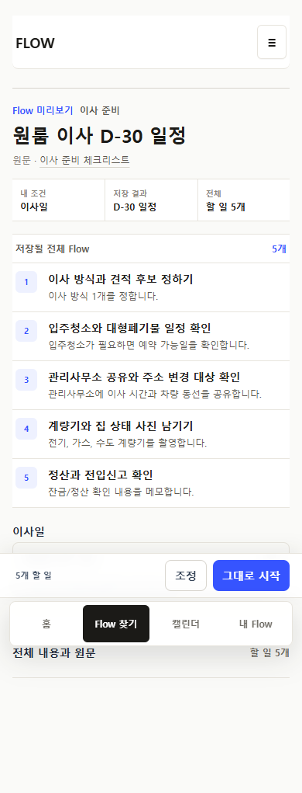
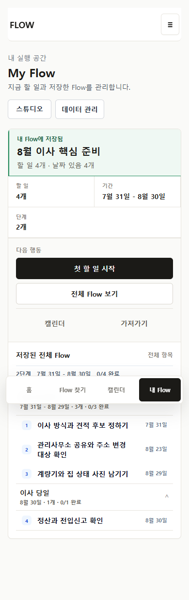
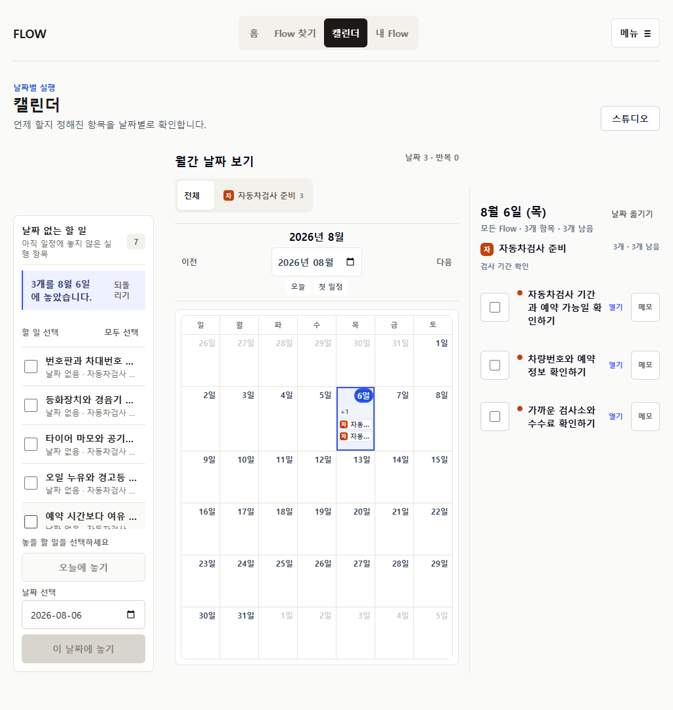
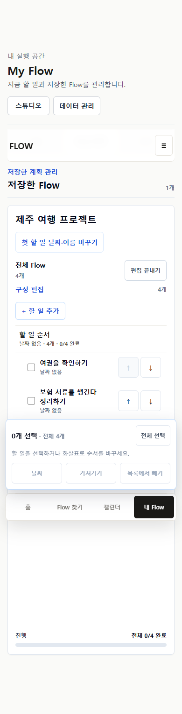
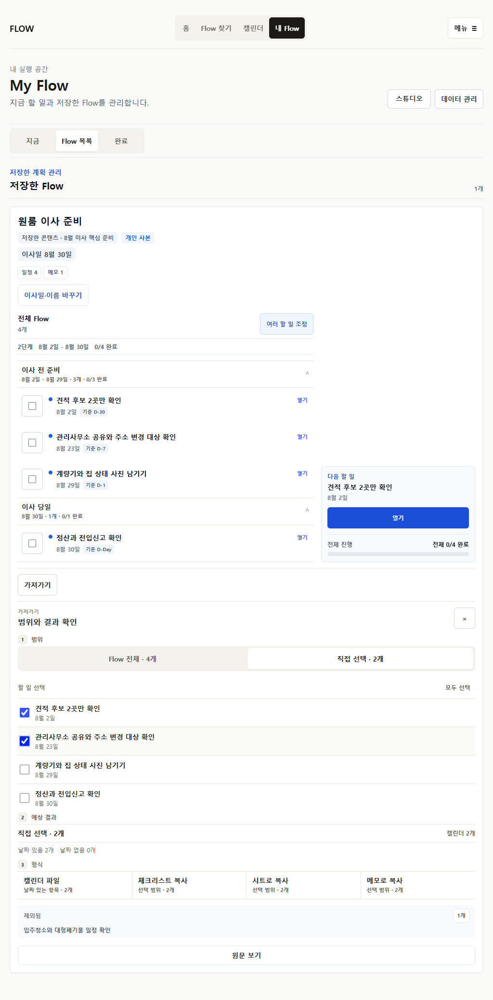
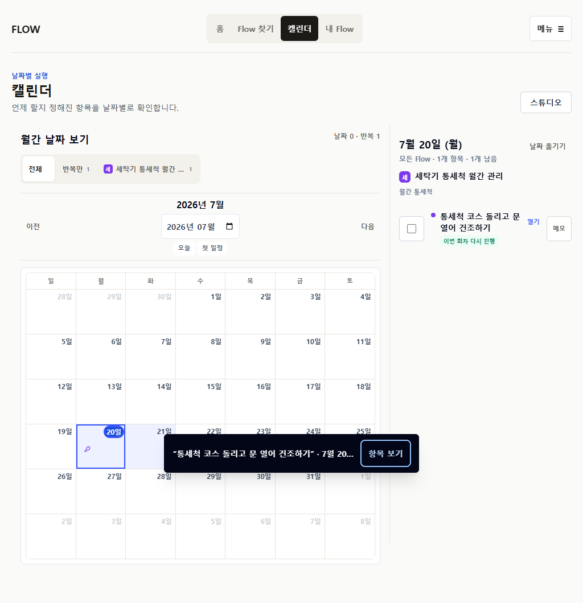
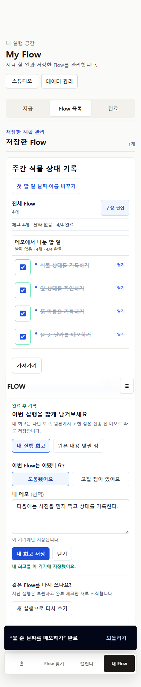
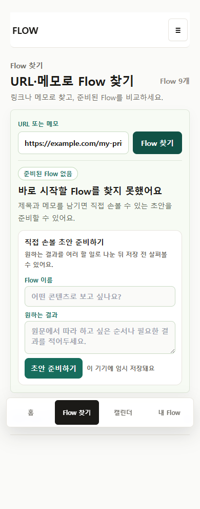
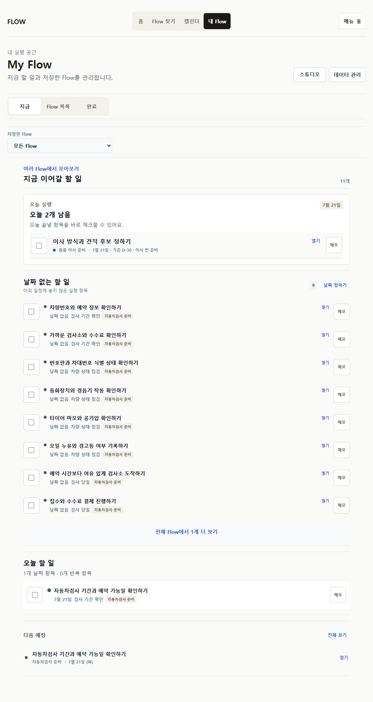
Prior design artifact comparison
2026-07-19-flow-content-usage-preview-ko.html은 current implementation이 아니다. production과 대조할 아이디어 근거로만 사용했다.
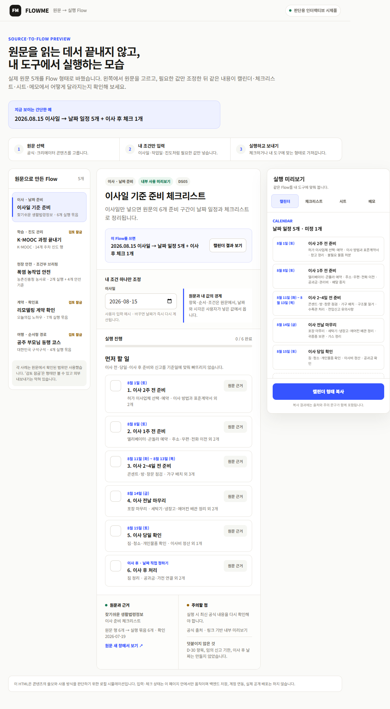
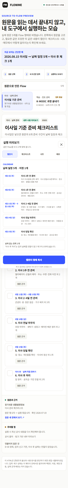
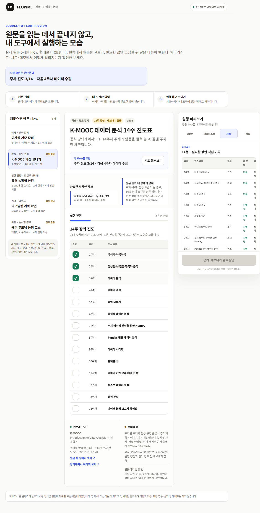
| 요소 | 판정 | Production 적용 원칙 |
|---|---|---|
| 원문/Flow 선택 rail | Adapt | 긴 audit rail이 아니라 source identity와 선택 Flow를 compact하게 표시 |
| 최소 입력 옆 전체 Flow preview | Adapt | save-before와 wide composer에서 effective item을 같은 projection으로 표시 |
| compact 실행 row | Adapt | status / title / timing / Flow marker / secondary action의 공통 anatomy |
| destination별 결과 수와 날짜 없음 이유 | Adapt | 모든 탭 대신 eligible destination과 count만 export preflight에 표시 |
| 긴 hero, 내부 검토 문구, 검토 잠금 | Reject | runtime action과 사용자 결과보다 앞에 두지 않음 |
| Calendar/checklist/sheet/memo 상시 탭 | Reject | content shape에 자연스러운 기본 결과와 보조 결과만 제공 |
Current vs proposed wireflow
surface와 viewport를 바꿔 첫 시선, primary, 기본 노출, 접힘, 제거 대상을 비교한다. 이것은 구현 전 방향 prototype이다.
Keep / Change / Remove / Defer
Current source feasibility
clean origin/main 63ea641과 production release의 app/runtime source는 같다. P27은 안정된 projection을 새로 만들지 않고 기존 plan을 더 좁은 UI로 소비한다.
| 제안 | 현재 계약 | 주 영향 파일 | 난이도 | Migration / 선행 조건 |
|---|---|---|---|---|
| Unified composer | URL lookup + memo segmentation | AppClient.tsx, URL/memo adapters | High | migration 없음 · ephemeral state contract 필요 |
| Contextual structure/batch | personal structural overlay/projection | AppClient.tsx, personal-structural-* | High | 없음 · operation UI만 분리 |
| Compact export | FlowExportScopePlan + receipt | ArtifactWorkbench.tsx, export-scope.ts | Medium | 없음 · plan이 단일 truth |
| Adaptive Calendar queue | unscheduled tray + date move + scope | AppClient.tsx, calendar-*.ts | High | 없음 · overlay primitive 선행 |
| Series/occurrence hierarchy | saved occurrence + projection identity | AppClient.tsx, saved-routine-occurrence.ts | Medium | 없음 · event wrapper a11y 우선 |
| Post-save / completion disclosure | receipt, execution run, reflection, reuse | AppClient.tsx, post-save/run helpers | Medium | 없음 · storage ownership 유지 |
| Direct provider sync | 계약 없음 | backend/provider layer | Very high | P27 불가 · P28 이후 별도 계약 |
Official reference patterns
FlowMe는 planner를 복제하지 않는다. 아래 pattern은 portable execution layer에 필요한 부분만 adapt한다.
dated task만 grid에 보이고 pending task와 반복 한 회차/전체 수정을 분리.
Today, Scheduled, All, Completed가 서로 다른 목적의 view.
Calendar Sets으로 현재 관련 있는 일정과 task만 scope.
Inbox, Today, Upcoming과 completion/uncomplete, 접히는 project section.
task list와 calendar split, drag scheduling, 선택 후 batch toolbar.
My Day는 focus projection이고 미완료 task는 원래 list에 유지.
left list에서 date-less page를 골라 grid에 놓고 context panel에서 수정.
같은 data의 list/calendar/timeline projection과 side peek.
routine은 plan, workout은 실제 log.
시작 전, 실행 중, 기록 후 edit 범위를 분리.
multi-week program과 현재 guided workout의 위계가 다름.
itinerary와 map/day, trip 전체와 plan item edit를 분리.
P27 full program
P27-01 하나가 아니라 전체 12개 slice다. 상세 scope, 비범위, 데이터 영향, test marker는 p27-backlog.md에 있다.
Evidence boundary
| 내부에서 닫을 것 | 실제 사용자에게만 확인 가능한 가정 |
|---|---|
| unnamed routine control, editor/export density, Calendar truncation, post-save grammar | `날짜 없음`을 queue로 이해하는가 |
| scope/count/output parity, stable identity, keyboard/focus, responsive overflow | `그대로 시작`과 `조정` 결과를 예측하는가 |
| series/current label과 one-control DOM | series 설정과 occurrence 실행을 자연스럽게 구분하는가 |
| reflection/correction storage와 visual ownership | 완료 직후 회고가 도움이 되는가 |